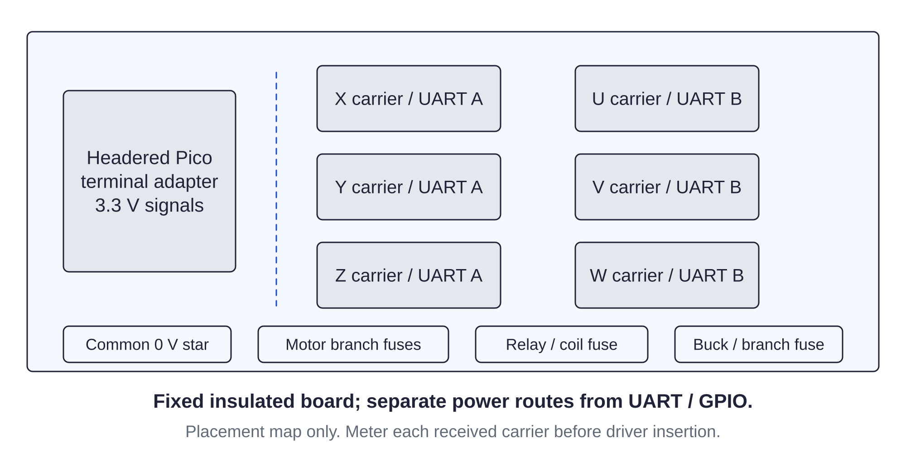

Controller / preparation111 / 179
Lay out the fixed control backplane
Six labeled carriers, the Pico adapter and power distribution stay on a fixed insulated board outside the motion and optics envelopes.
Add300 × 300 clear-PETG blank · received carrier / Pico / fuse / DIN footprints · labels
Tools / setupBrick and USB unplugged · caliper · drill · clearance check

- Lay out two columns of three carriers: X/Y/Z on UART A, U/V/W on UART B. Place the Pico, fuse block and DIN rail beside them.
- Fit the clipped buck, relay, end stops and at most nine selected terminal blocks on the 203.2 mm rail; confirm actual footprint and service access.
- Keep the 24 V distribution and motor leads away from the GPIO, UART and loop terminals.
- Transfer only actual mounting holes onto clear blank lands: Ø3.4 mm components, Ø6.5 mm frame holes with ≥12 mm edge distance. Drill the blank alone.
Ready when
Received footprints fit with plug, meter and fuse access, and every drilled board/washer position preserves copper isolation. A forced layout or an unmapped trace at a mounting point fails this blank. Correct the unpowered placement before drilling or fitting electronics.